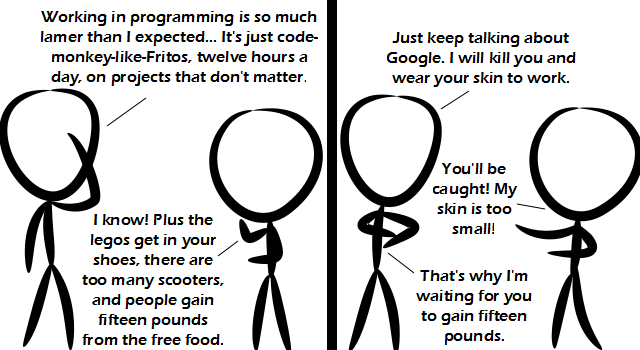

Comic JK 745
When I Feel Like It
⇤
<
?
>
⇥

⇤
<
?
>
⇥
Forum
.
RSS
.
Digg
.
Facebook
.
Reddit
.
Twitter
.
Stumbleupon
Enter your thoughts on number 745 here. Please, no spamming, trolling, googling, or playing Buffalo Bill. Miaow Ill make you into Cupcakes. >Killherkillherkillherkillher Though their racks stretch on so far that they need scooters to get to failing drives quickly enough. I work in programming and my job is nothing at all like either of those. I work in programming, and it is like that (forget you, people at google, you lucky jerks) > I work in programming too, and it's worse than that (intern at IBM SVL) >> I work in programming as well, and it's better than that, but then I work for a startup that has like 3 other employees. I'm a programmer, OK used to be, OK I wrote a program once. I don't work in programming, and it's nothing like that. I lift things up, and I put them down. I don't work, and it's like that. I don't like, and it works like that. I work at the Geek Squad, and its like that i wherk at ther jerk sherkh ernd erts lerck thert That didn't work. You don't work. Who works anyhow? Google works. And it's like that. Dear Mr. Comic JK, I loved your song reference in the first panel! It brought me back to my obscure-geeky-music days of high school. Keep drawing! Your avid follower, Fan of the New Layout :) > author gives no fuck about your opinion >> <<yeah i do>>